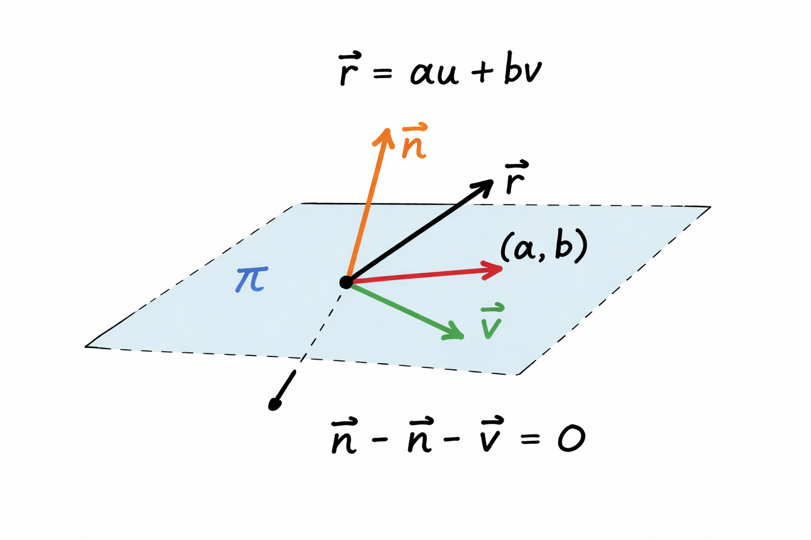
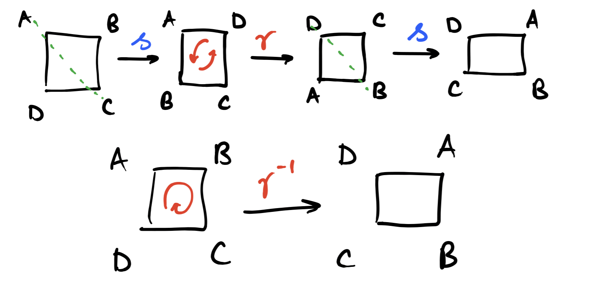

RESOURCES
Here are a collection of resources for self-study that I have made, these include univeristy lecture notes and Anki flashcards for both A-Level and University.
Here are a collection of resources for self-study that I have made, these include univeristy lecture notes and Anki flashcards for both A-Level and University.


These are my personal Anki flashcards for A-Level Maths, Further Maths, Physics and for University modules. These flashcards are tailored to me and some cards may make little or no sense to anyone other than me, yet most of the cards should be helpful. Do not solely use these flashcards to study.
Maths and Further Maths are together for OCR-A Physics, OCR-A Maths and OCR-A Further Maths with mechanics and additional pure as the additional modules.